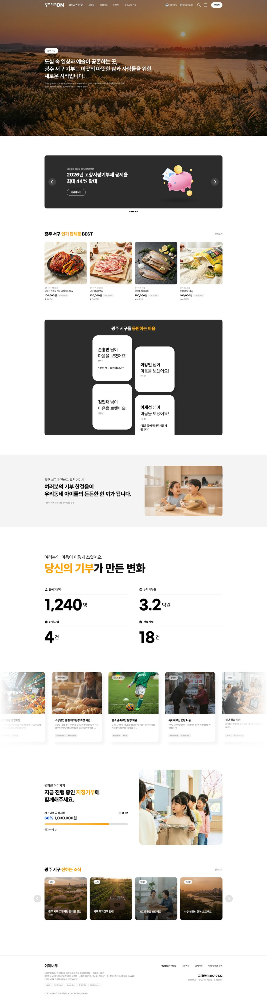

광주서구ON 세 화면(메인 · 광주서구이야기 · 기부사업)에 들어갈 콘텐츠 위치를 표시해 정리했습니다. 표시된 영역 중 ‘요청’ 항목만 확인해 주시면 됩니다.
안녕하세요, 주무관님. 광주서구ON 콘텐츠를 준비하며 화면별로 필요한 자료를 한눈에 보시도록 정리했습니다.
대부분의 콘텐츠는 서구청 홈페이지 공개자료와 이미 받은 자료로 저희가 구성합니다. 아래에서 주황색 ‘요청’ 표시가 붙은 부분만 확인해 회신 주시면 됩니다. 별도로 노출하고 싶으신 내용이 있으면 언제든 알려 주세요.
회신처 · syaron9364@gmail.com
서구의 이야기와 기부가 만든 변화를 보여주는 첫 화면입니다. 히어로 · 성과 수치 · 전하고 싶은 이야기 · 최근 소식으로 구성됩니다.

1 2 3 4 5첫 화면 배경은 저희가 사계절 이미지로 자체 준비합니다(현재 시안의 이미지는 예시). 별도로 요청드리지 않습니다.
배경 위에 얹는 한 줄 슬로건/메시지가 있으면 보내 주세요.
주민·기부자에게 전하고 싶은 메시지 본문 텍스트가 있으면 보내 주세요.
2025년 한 해 확정 기준의 고정 수치로 넣으려 합니다(실시간 갱신이 아닙니다). 현재 시안의 1,240명·3.2억원·4건·18건은 예시입니다.
서구청 홈페이지·보도 소식으로 저희가 구성합니다. 꼭 넣고 싶은 소식이 있으면 알려 주세요.
광주 서구를 소개하고, ‘전하는 소식’을 모아 보는 별도 페이지입니다.
새 페이지를 여는 구청장 인사말/말씀은 공식 메시지라 저희가 대신 작성할 수 없어 요청드립니다. 이 페이지용으로 쓰고 싶은 서구 소개문이 있으면 함께 주세요.
상징·전경 이미지와 일반 소개는 홈페이지 공개자료로 저희가 구성합니다. 강조하고 싶은 포인트(특성·비전 등)가 따로 있으면 알려 주세요.
홈페이지·보도 소식으로 구성합니다. 지정해 노출하고 싶은 소식 목록이 있으면 회신 주세요.
광주 서구의 천원시리즈 기부사업을 이야기로 보여주는 화면입니다. 목록에서 사업을 고르면 상세로 이어집니다.
천원국시 매장 · 천원택시 현장 등 실제 사진의 원본이 필요합니다.
천원국시 영상 3건은 이미 가지고 있습니다. 천원택시 등 다른 사업 영상이 있으면 유튜브 링크를 주세요.
사업별 최신 성과 수치가 있으면 알려 주세요 — 예: 천원국시 누적 판매 · 천원택시 2026년 운행/이용 실적 등.
2026년 서비스 안내문 · 소식지 기사 · 실사진 2장을 이미 받았습니다(감사합니다). 최신 집행 성과 수치만 있으면 보완해 주세요.